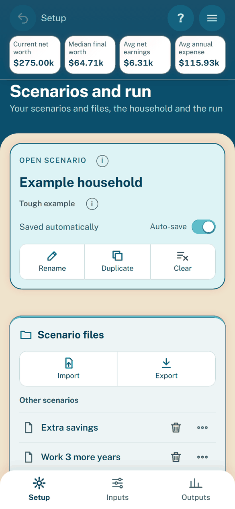
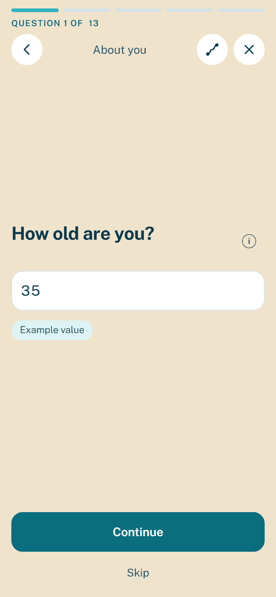

The app: scenarios and guided flows
Purpose: learn to save and share scenarios, and use the Walkthrough, continued from The app.
Scenarios on Setup
The settings you edit are the open scenario. One panel at the top of Setup holds it and, under it, Scenario files; the other Setup panels follow.


Setup: the scenario panel, with the open scenario above Scenario files.
The status line reads:
Status |
Meaning |
|---|---|
Unsaved changes |
The settings differ from the copy saved on this device, or none is saved. |
Saved, Saved just now |
The settings match the saved copy. |
Saved automatically |
The Auto-save switch is on. |
Tough example |
The unedited example household, which runs short of money on purpose. Any edit removes the tag; Load example household brings it back. |
Auto-save
Auto-save is on for every new scenario, duplicate and import.
While it is on, each settled edit (after a 0.4 s pause) writes the saved copy, and Save is hidden.
Turn it off and it stays off for that scenario only.
Scenario files
Button |
What it does |
|---|---|
Save |
Keeps the settings on this device under the open scenario’s name. The limit is 50 scenarios. Hidden while Auto-save is on. |
Import |
Opens a dialog to choose a file or paste the scenario text, then Open. The file’s settings become the open scenario, named after the file (“Pasted scenario” for pasted text). |
Export |
Saves name.json as a download. |
New |
Asks for a name, then Create and start opens an empty scenario in the Walkthrough. Summary and Plots show “Finish setup to see results” until your age is filled in. |
A message under the open card always says what happened (“Saved”, “Downloaded”, “Export cancelled”).
An import named like a saved scenario with other settings opens as “name_1” instead of writing over it.
Other scenarios
This list holds every saved scenario except the open one, plus the example household while it is not open.
Tap a row to open it. With unsaved changes and Auto-save off, a dialog asks first: Save, Discard or Cancel.
Use a row’s “…” menu for Duplicate, Rename, Export and Delete. Delete asks once.
The example household has no Rename. Deleting it frees its name until Load example household under Start over opens it again.
The open scenario cannot be deleted.
Deleting a scenario removes it from the list, from Compare and from this device.
Limits and names
A scenario holds at most 50 accounts, 50 loans, 20 cars, 20 homes, 20 children, 100 salary-history years, 200 expense rows and 200 rows in any other list.
A file with a larger list, or a number too large to hold, is refused with a message naming the field.
A name uses letters, digits, spaces, “-”, “_” or “.”. It may not start with “.” or end with “.” or a space.
A name may not be “Default profile”, “Current settings” or a Windows device name such as CON, so it works as a file name anywhere.
Undo and reset
Undo (the round button at the top bar’s left) steps back through the last 20 settled input states, Clear included. A burst of typing is one step. It starts empty whenever another scenario opens.
After a step back, the page goes to the first changed field and tints it for one second.
A number or choice that holds its default shows in gray: a blank field that follows its source, or a value equal to the shipped default (for example Child inflation factor at 20%). Once you change it, it shows in normal ink and gets a small circular-arrow button. The button puts the default back, so a blank field follows its source again. Reset counts as an Undo step. A group’s Reset to defaults button still resets the whole group.
Terms and agreement
A full-screen step shows before the app on a first visit, and again whenever the Terms change. See Legal for the Terms.
Read the four key points and the full Terms, Privacy notice and licenses.
Tick “I have read and agree to the Terms”.
Tap Agree and continue. Decline leaves the app locked.
If browser storage is blocked, the step asks on each load.
Under the Outputs run bar, two lines state that the planner is not advice. A banner (“Example figures still in use for: …”) names settings still holding the example household’s fictional figures.
Effort and style
The app asks for effort and style only in the Beta build. See Beta: effort and style.
Walkthrough
“Walk me through it” asks for the main settings one question at a time, over the page.


One question: big heading, big controls, Continue and Skip at the bottom.
Start it
A new user’s first launch shows the Terms, then the Walkthrough, then the tour once per device.
Later, choose Walk me through it… in the menu (Continue the walkthrough… while paused).
Opening or importing a scenario never starts it.
On the example household’s settings it first asks How would you like to start?. Start fresh goes to the welcome. Open my file imports a scenario file and closes the Walkthrough as finished, every question marked Answered.
Answer a question
Each control starts with your current setting, tagged “Example value” while it is the example’s.
Change it, then tap Continue (or press Enter, or swipe left). Skip keeps what is shown. Swipe right to go back.
Tap an (i) for the field’s help. Tap Go deeper, beside Continue, for a side branch: its label says how many detailed questions it holds, or which page it opens. A branch question shows “Detail 1 of 2 · returns to main questions”, and the next main question says “Back on the main questions”. A timeline down the right side shows a dot per question (filled when answered, dimmed when skipped, ringed for the current one), with Go deeper questions stepped aside as a branch; tap a dot to go to that question.
Tap Open on a question that lives on an Inputs page. A “Back to the walkthrough” button in the top bar, which never covers the page, brings you back.
Answers write into the settings at once. A value out of range (“Age must be between 18 and 100.”) or an emptied number box is refused with a message under the field. Continue on an untouched question writes nothing.
A follow-up question shows only after you say you have the thing, such as home questions after a Yes to owning a home.
Topics
The topics are About you, Work and pay, Savings, Spending, Retirement, Medicare and Health, plus the optional Tax strategies (Roth conversion, backdoor Roth and QCD), offered from the review only. Questions about today come first; Retirement comes last and asks when each of you stops working, whether spending changes in retirement, the claim age and the Social Security benefit: Yes takes the table from your statement, and No or not sure estimates it from your pay. It also asks about a move to another state. Go deeper on Spending goes by category on the Expenses page instead. A monthly spending total replaces every monthly expense row with one Everything else row, and one-off rows stay.
Trail and review
A thin bar at the top has one segment per topic. Back returns to the previous question.
The route button opens Your trail: every topic and question with a status (Answered, Skipped, Now, Not yet). Tap a row to go there.
The last screen, Here is your plan, lists each answer with a Change button; the question it opens has Back to summary beside Continue, which saves the answer and returns. It adds “Still from the example household” with an Open button for each item not yet replaced.
A row also has Open in Inputs, which pauses the Walkthrough.
Finish opens Outputs, Summary.
Leave and resume
The X (or Escape; Escape first closes the trail) asks what to do:
Save answers and open the app: the answers stay, and a reload or the menu resumes at the same question.
Keep answering: back to the question.
Discard answers from this session: the settings go back to what they were when the Walkthrough started.
Progress belongs to the open scenario, so switching scenarios switches which Walkthrough resumes. The automatic Monte Carlo waits while the Walkthrough is open.